CS180 Project 3A
Author: Sammie Smith, Fall 2025
Part A1: Shooting the Photos
For this part, I captured photo pairs that exhibit projective transformations
by rotating the camera around a fixed center of projection (without translating). Each pair has
40–70% overlap to ensure accurate homography estimation and alignment.
The scenes were chosen to have clear planar structures and good lighting conditions. All photos
were taken around the UC Berkeley campus using a standard phone camera with minimal distortion.
Mosaic A: Campanile at Sunset
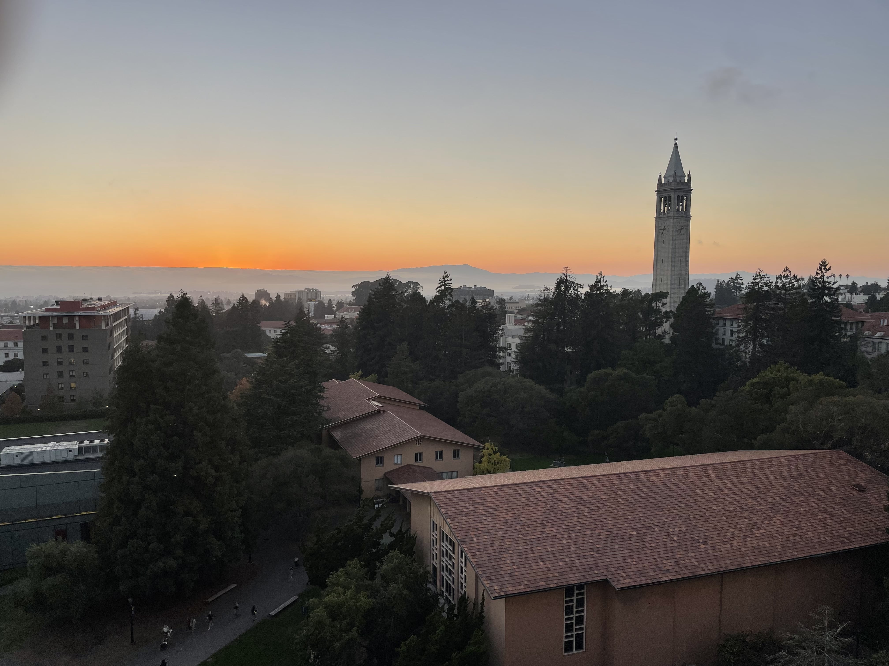
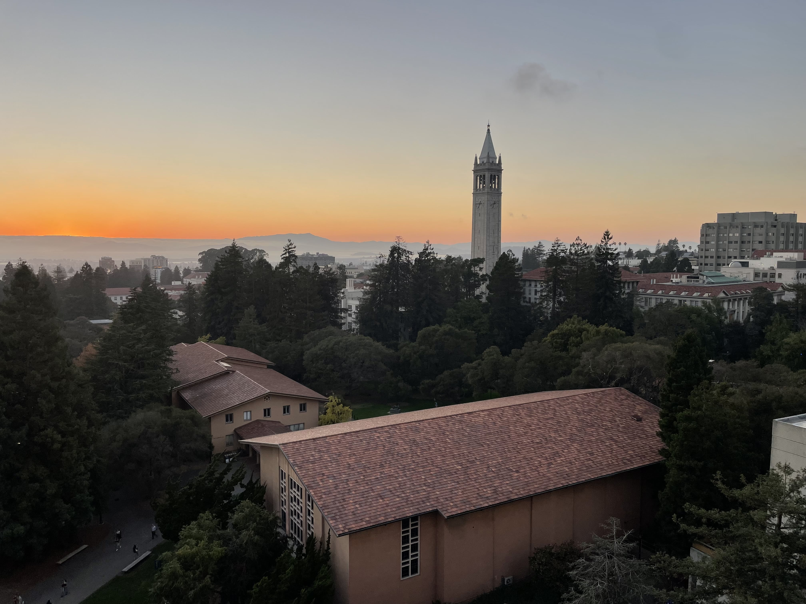
Mosaic B: Southside at Sunset
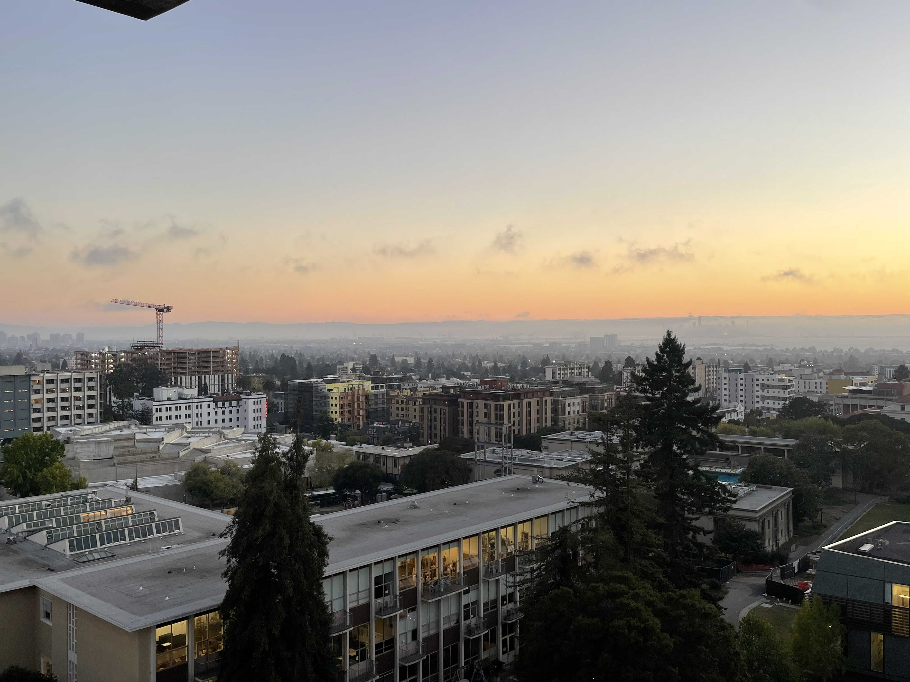
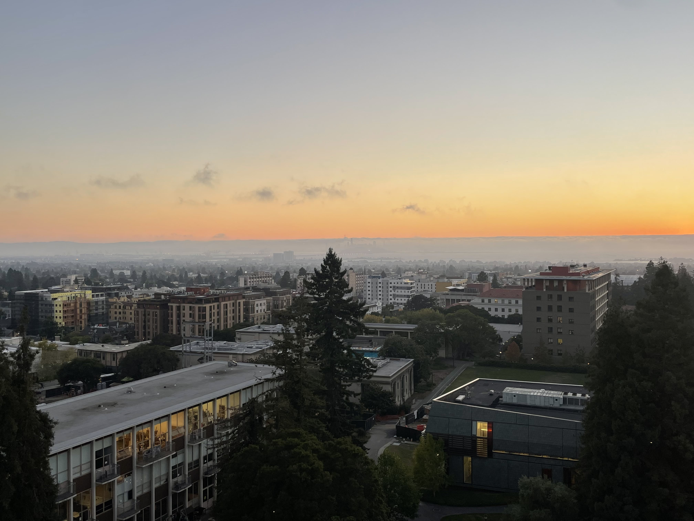
Mosaic C: View from Grimes
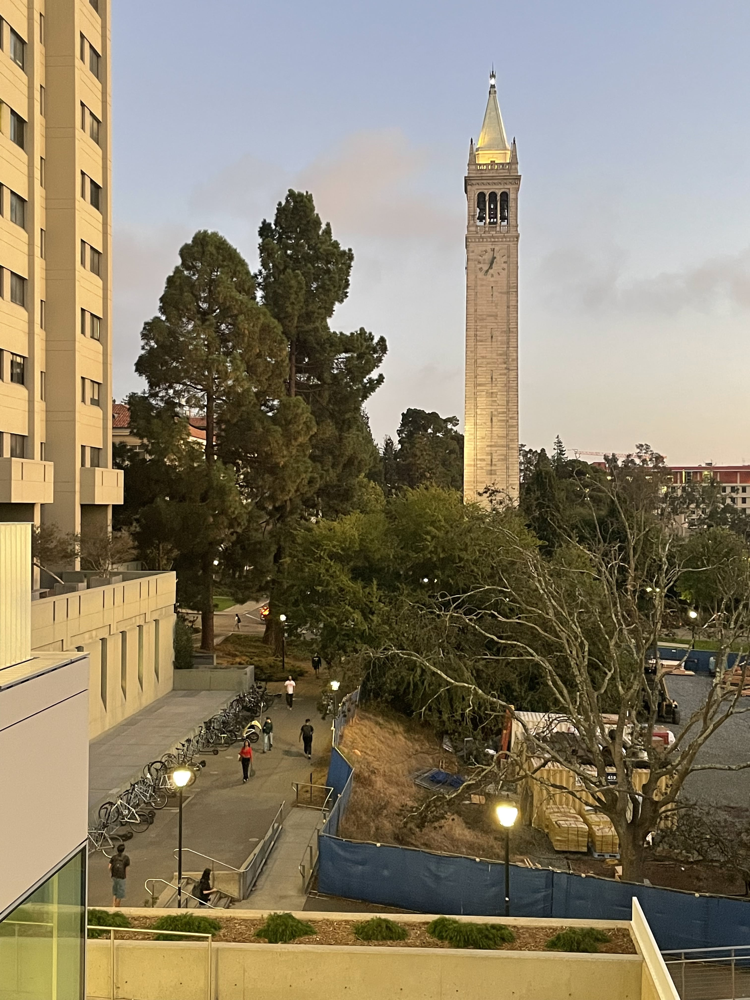
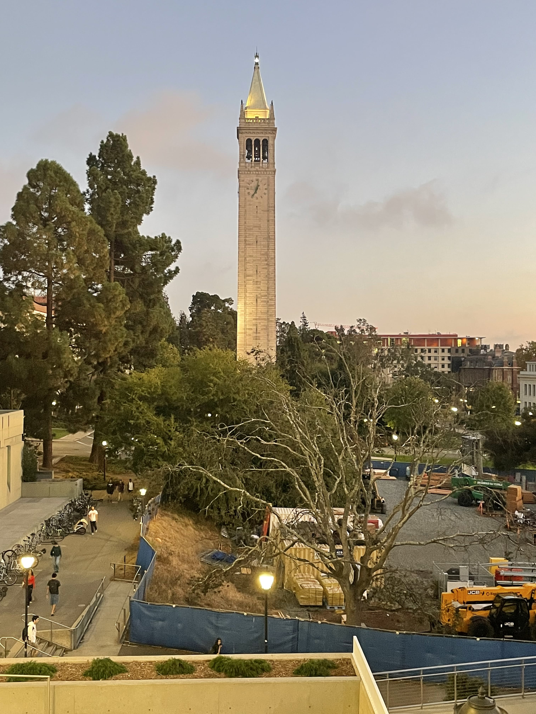
Each mosaic pair maintains a projective relationship, meaning every scene point is observed
through the same camera center but under a different viewing direction.
Part A2: Recovering Homographies
Method:
I used the system of equations we solved for in discussion to solve for the homography matrix.
System of equations:
# find A that solves Ah = b where h [h1 h2 ... h8].T and where b = [u, v]
# each correspondence gets two equations (like in discussion)
# [ x y 1 0 0 0 -ux -uy] * h = u
# [ 0 0 0 x y 1 -vx -vy] * h = v
Then I solved the system Ah = b with Ordinary Least Squares to get the homography that resulted in the lowest reconstruction error.
Mosaic A: Campanile at Sunset
Images with correspondences labeled:
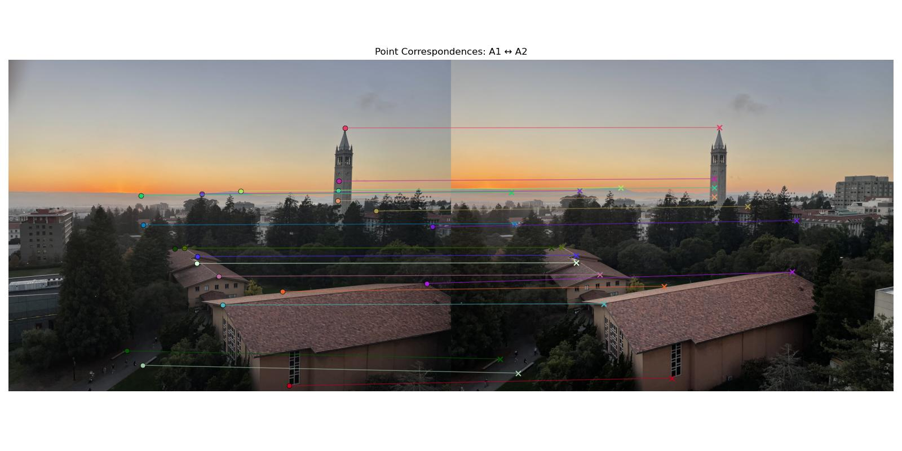
Number of Correspondences: 21
Resulting System of Equations
Reconstruction Test on first correspondence:
Expected point: [1393 2224], Mapped point: [1393.07 2222.62] (accurate within a small error!)
Mosaic B: Southside at Sunset
Images with correspondences labeled:
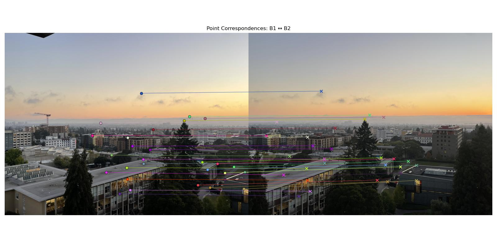
Number of Correspondences: 28
Resulting System of Equations
Reconstruction Test on first correspondence:
Expected point: [1922 1431], Mapped point: [1918.86 1431.98]
Mosaic C: View from Grimes
Images with correspondences labeled:
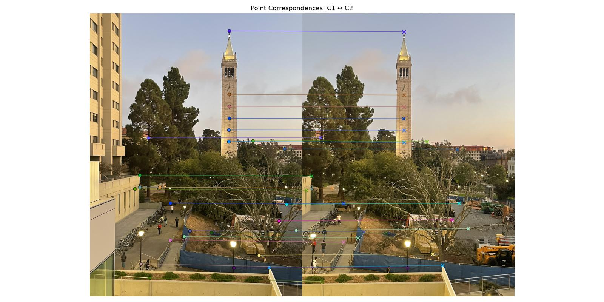
Number of Correspondences: 24
Resulting System of Equations
Reconstruction Test on first correspondence:
Expected point: [1449 260], Mapped point: [1455.59 259.37]
Part A3: Warp the Images
To warp images, I first projected the four corners of the original image through the homography to find the bounding box. Then, I applied inverse mapping using the inverse homography (calculated in Part A2) to find each output pixel’s corresponding location in the original image.
I implemented both Nearest Neighbor and Bilinear Interpolation. Nearest Neighbor is faster but lower quality, while Bilinear produces smoother results.
Mosaic A: Warping of the Campanile at Sunset
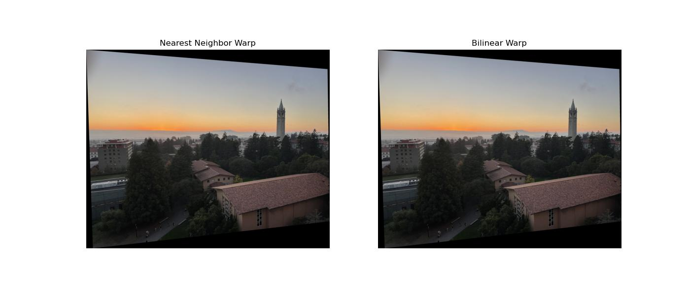
Mosaic C: Warping of the View from Grimes
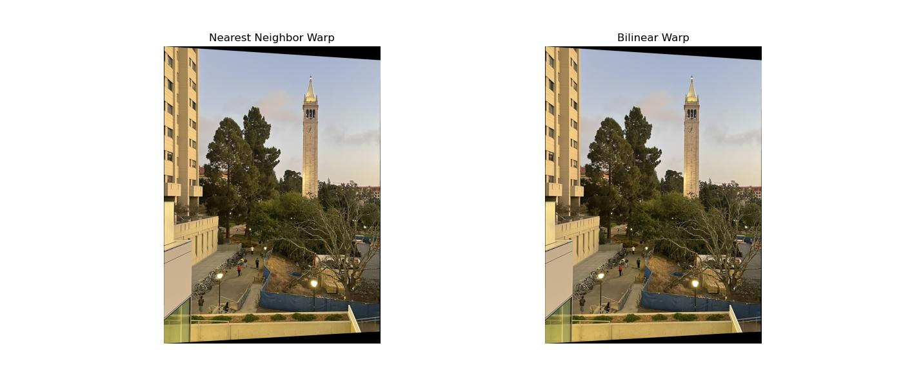
Analysis of Interpolation:
Nearest Neighbor interpolation is much faster (since it references one pixel), but Bilinear interpolation yields smoother, higher-quality images by averaging four neighboring pixels. On high-resolution JPGs, differences are subtle unless zoomed in; lower-resolution images show clearer quality gains.
Part A4: Blend the Images into a Mosaic
Initially, I implemented image stitching by warping only the second image using a homography and then manually translating the first image onto the mosaic canvas. This aligned correspondences numerically but not visually. After testing post-warp translation corrections and canvas adjustments (which either shifted too far or caused blur), I realized both images needed to be placed in the same coordinate frame.
My final version warps both images under a shared global transformation (the translation that normalizes mosaic coordinates). I then blend them using alpha blending, which weights each image more strongly near its center and fades toward its edges (based on distance to the closest border). This approach minimizes seams and creates a natural, continuous mosaic.
To remove the edge artifacts and transparency issues in my mosaics, I refined my blending pipeline to handle overlaps and non-overlapping regions differently. Initially, both warped images were globally alpha-blended, which caused visible dark seams and transparency along image borders. To fix this, I computed binary masks identifying valid pixel regions in each warped image, and separated overlap from unique regions. Non-overlapping parts were assigned full intensity, while overlapping regions were smoothly blended using per-pixel alpha masks that fade toward each image’s edges. This selective blending ensured seamless transitions where images overlap, while keeping the rest of the mosaic sharp and fully opaque. The final result removed the gray transparency problem and produced visually continuous panoramas with clean, natural edges.
Notice pre and post attempts to soften edge artifacts (correspondence alignment img with transparency and string edge artifacts vs final mosaic with softer edge artifacts and no transparency
Mosaic A: Campanile at Sunset

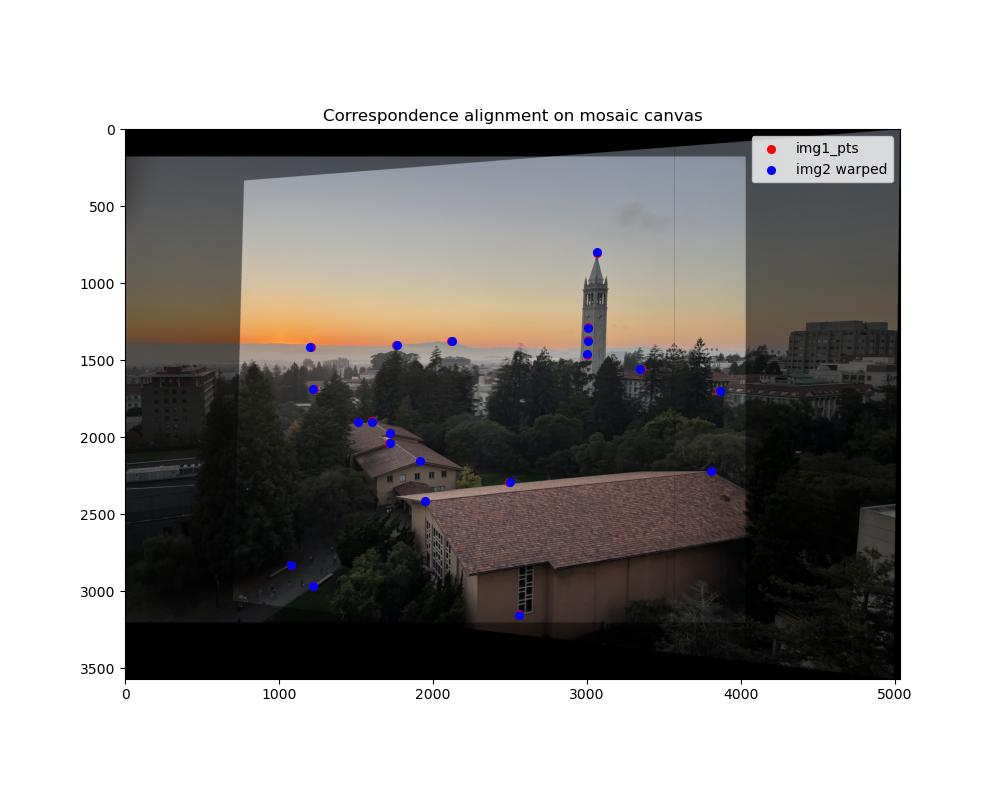
Mosaic B: Southside at Sunset

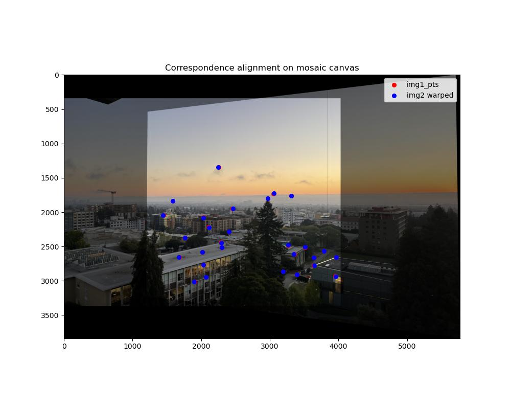
Mosaic C: View from Grimes

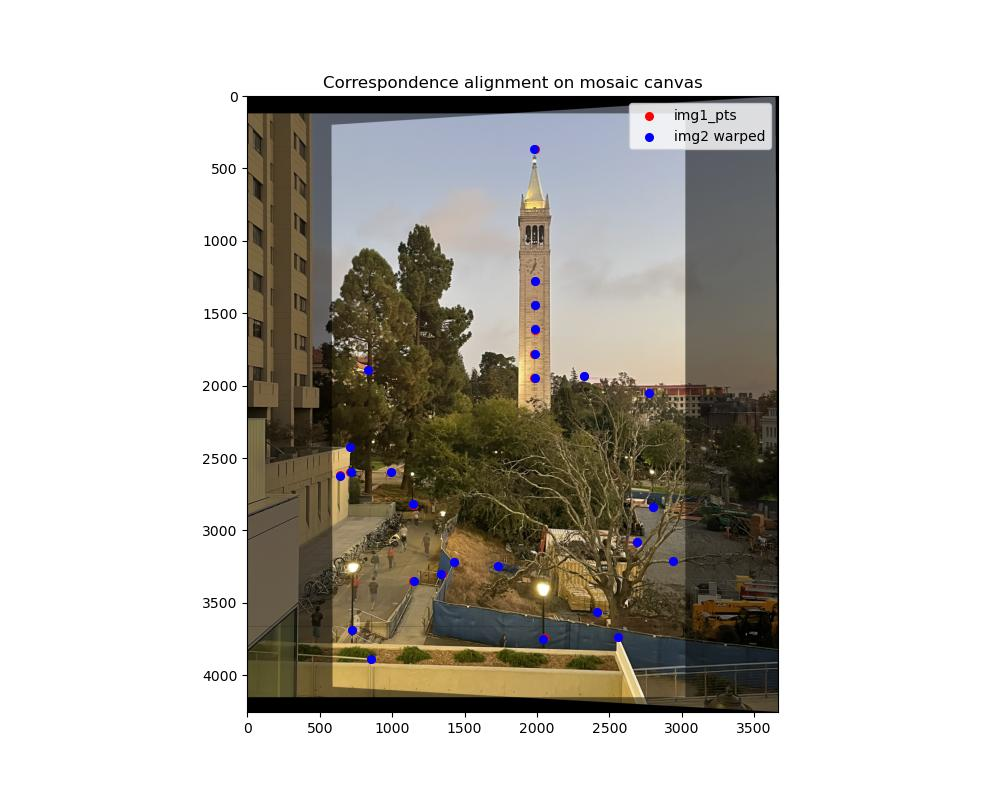